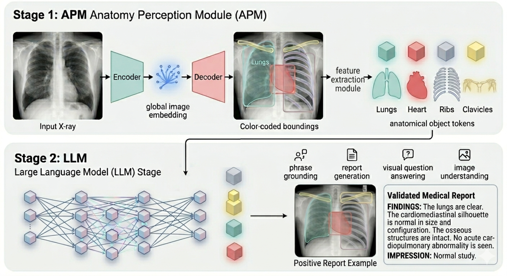
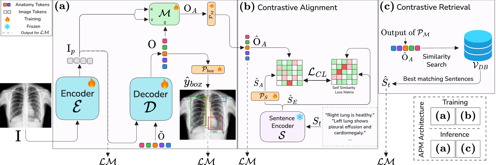
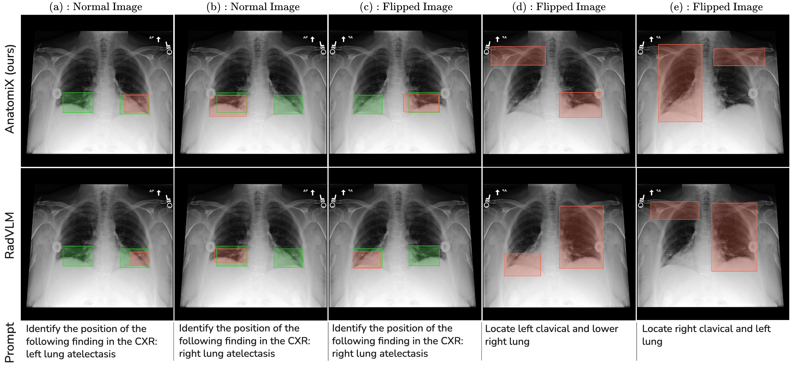

AnatomiX: Anatomy-Aware Grounded Multimodal LLM for Chest X-Ray Interpretation
Anees Hashmi, Numan Saeed, Christoph Lippert
Hasso Plattner Institute, Germany | CVPR 2026 - Findings

Abstract
Multimodal medical LLMs have shown substantial progress in chest X-ray interpretation but continue to face challenges in spatial reasoning and anatomical understanding. AnatomiX introduces a two-stage approach: first, identifying anatomical structures and features; second, using a language model to perform downstream tasks such as phrase grounding, report generation, visual question answering, and image understanding. Extensive experiments demonstrate >25% improvement in anatomy grounding and grounded tasks compared to existing approaches.
Key Contributions
- 🫁 Anatomy-Aware MLLM: Precisely interprets chest X‑rays with true anatomical grounding.
- ⚙️ Two-Stage Radiology Workflow: Extracts anatomical features first, then reasons with language intelligence.
- 📈 Performance Boost: 25%+ improvement on CXR grounding.
- 🛡️ Robust Reasoning: Maintains anatomical accuracy even under flipped or challenging images.
Method

Fig 1: Anatomy Perception Module (APM) architecture. Encoder outputs image embeddings, decoder and feature module output bounding boxes and anatomical tokens. Vector database used for contrastive retrieval during inference.
Results

Fig 2: AnatomiX vs RadVLM in anatomy understanding. Red = model output, Green = ground truth. AnatomiX shows superior anatomical recognition, including flipped images.
| Model | NLG Metrics (GD / GC) | Clinical Metrics (GD / GC) | Phrase Grounding | Anatomy Grounding | |||||
|---|---|---|---|---|---|---|---|---|---|
| BERTScore | ROUGE | METEOR | RadGraph-F1 | CheXbert-14-F1 | IoU | mAP | IoU | mAP | |
| MAIRA-2 | 0.01 / 0.08 | 0.01 / 0.06 | 0.01 / 0.04 | 0.00 / 0.02 | 0.03 / 0.02 | 0.32 | 0.24 | 0.35 | 0.24 |
| RadVLM | 0.15 / 0.27 | 0.06 / 0.11 | 0.05 / 0.07 | 0.00 / 0.12 | 0.32 / 0.40 | 0.39 | 0.30 | 0.60 | 0.49 |
| CheXagent | 0.49 / 0.56 | 0.43 / 0.44 | 0.29 / 0.37 | 0.40 / 0.39 | 0.40 / 0.61 | 0.33 | 0.24 | 0.18 | 0.09 |
| AnatomiX (ours) | 0.63 / 0.65 | 0.60 / 0.56 | 0.42 / 0.48 | 0.58 / 0.50 | 0.54 / 0.78 | 0.46 | 0.35 | 0.73 | 0.66 |
Table 1: Performance on four grounding tasks. GD = Grounded Diagnosis, GC = Grounded Captioning.
BibTeX
@article{hashmi2026anatomix,
title={AnatomiX, an Anatomy-Aware Grounded Multimodal Large Language Model for Chest X-Ray Interpretation},
author={Hashmi, Anees Ur Rehman and Saeed, Numan and Lippert, Christoph},
journal={arXiv preprint arXiv:2601.03191},
year={2026}
}